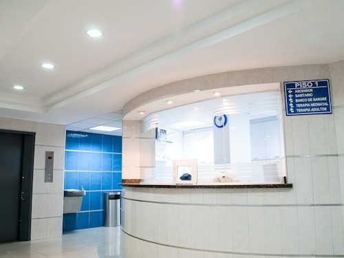
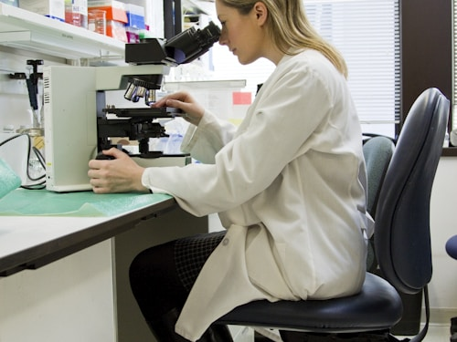

იზრუნეთ თქვენს ჯანმრთელობაზე პროფესიონალებთან ერთად!
კლინიკა DIACOR დაფუძნდა არაგადამდებ, ქრონიკულ და კომორბიდულ დაავადებათა კომპლექსური მართვის მიზნით. იაპონიის მთავრობის მხარდაჭერით განხორციელდა დიაბეტის პრევენციის პროგრამა, რომლის ფარგლებშიც გამოვიკვლიეთ 2,800 პაციენტი.
კვლევის შედეგები გამოქვეყნდა მაღალრეიტინგულ ჟურნალებში და წარდგენილი იყო 4 საერთაშორისო კონგრესზე: EASD (ვენა), IDF (მონრეალი), WEC (კიოტო), WCDP (დრეზდენი). პროექტი იაპონიის მთავრობამ ყველაზე წარმატებულ პროექტად აღიარა.
DIACOR-ს მინიჭებული აქვს საერთაშორისო დიაბეტის ფედერაციის (IDF) „დიაბეტის განათლების ცენტრის" (Center of Education) და „სრულყოფილების ცენტრის" (Center of Excellence) სტატუსი.
კლინიკაში ფუნქციონირებს ოთხი დეპარტამენტი:
ენდოკრინოლოგია — ხელმძღვანელი: პროფ. ლალი ნიკოლეიშვილი
შინაგანი მედიცინა — ხელმძღვანელი: ელენე შეროზია
კარდიოლოგია — ხელმძღვანელი: ზვიად ერაძე
ლაბორატორია — ხელმძღვანელი: შორენა ძველაია
კლინიკური დირექტორი: პროფესორი რამაზ ყურაშვილი



ჩვენს კლინიკაში მოქმედი სადაზღვევო კომპანიები